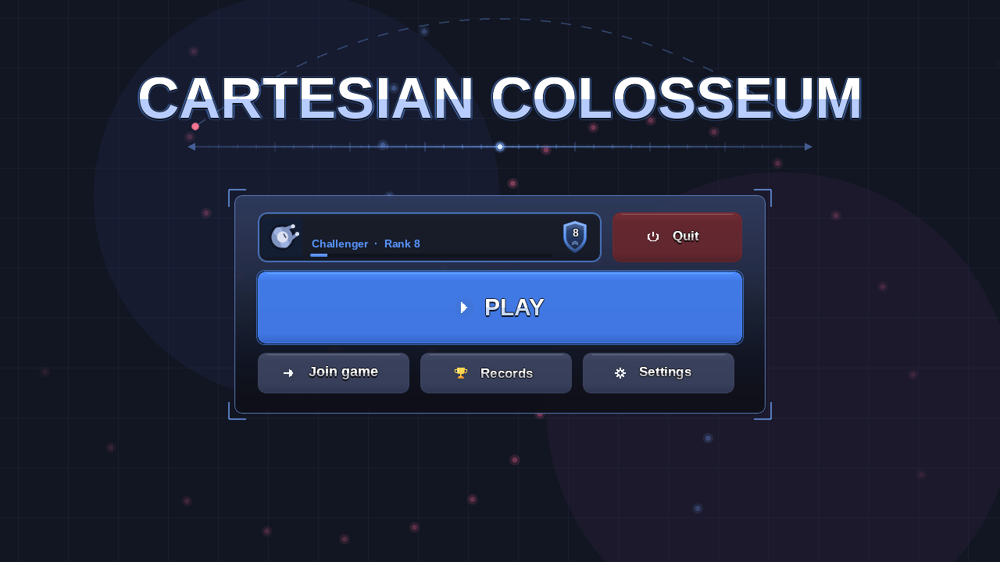
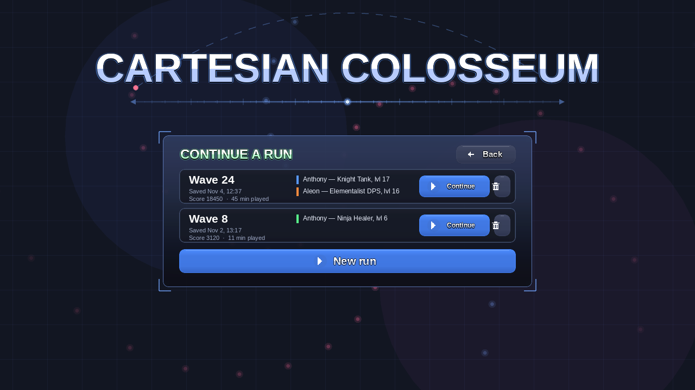
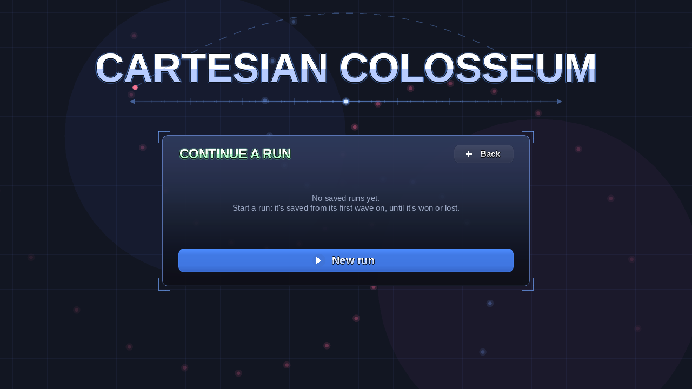
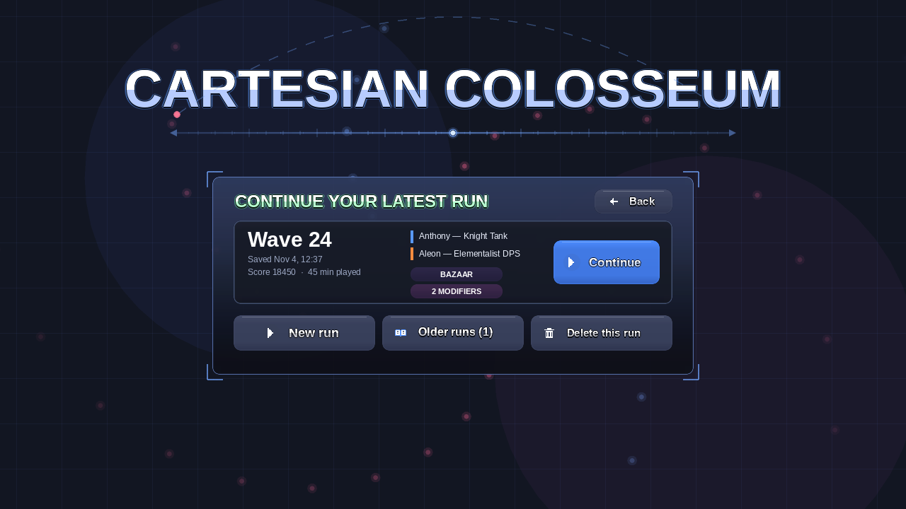
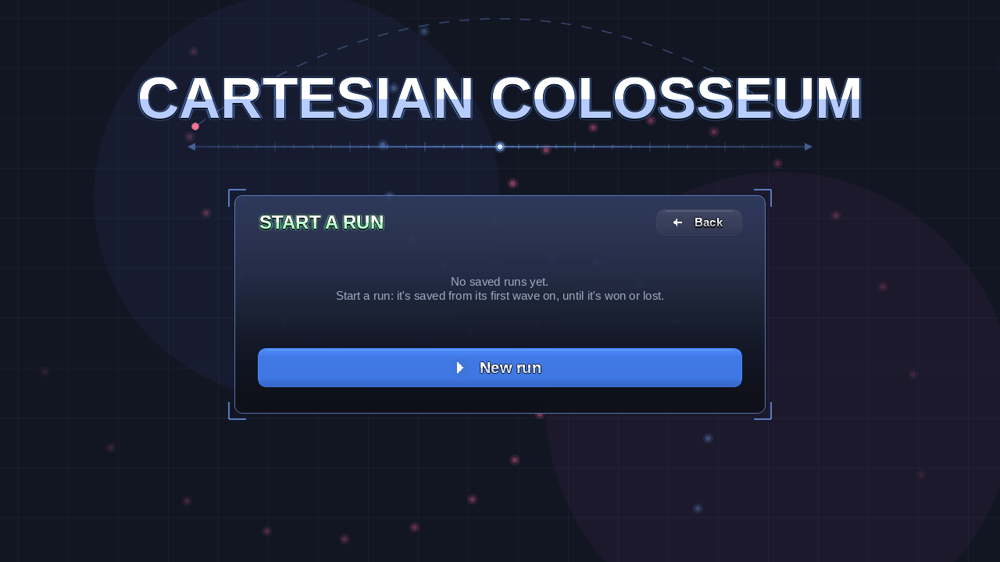
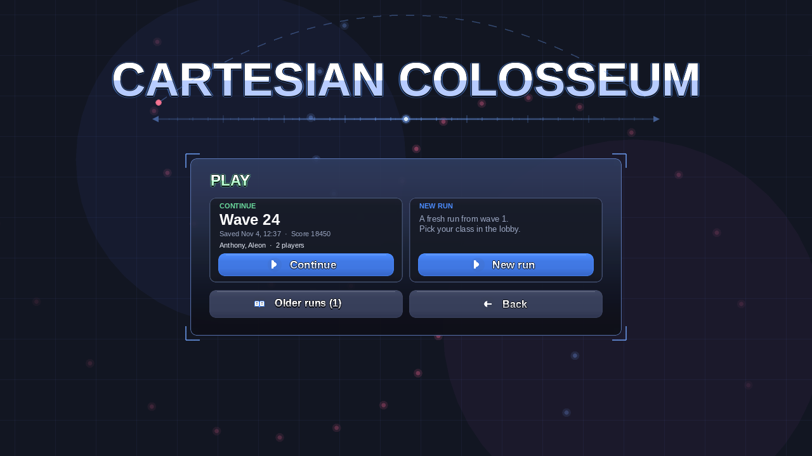
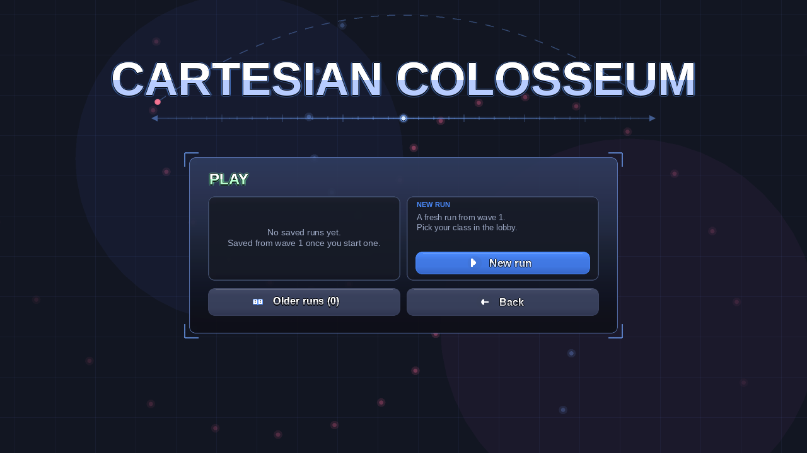

The menu with Host game renamed Play and Continue removed. Pressing Play swaps what is inside the same box for the saved-runs picker, so the box keeps its size and position and the menu to lobby transition does not change. Each picture is a screenshot of the real menu drawn by the game's own menu code, with the picker drawn by a throwaway test patch that has been removed from the game. The tip line under the title is not drawn by the screenshot tool and stays as it is today.
Your card and Quit share the top row, Play is the big button, and Join game, Records and Settings sit under it. Continue is gone.

Pressing Play shows your saved runs as compact rows, newest first, with Continue and a trash button on each, and a wide New run button under them.


Pressing Play shows your latest run as one large card with a big Continue button. New run, Older runs and Delete sit under it.


Pressing Play shows two side-by-side choices: Continue your latest run, or start a New run. Older runs and Back sit under them.

